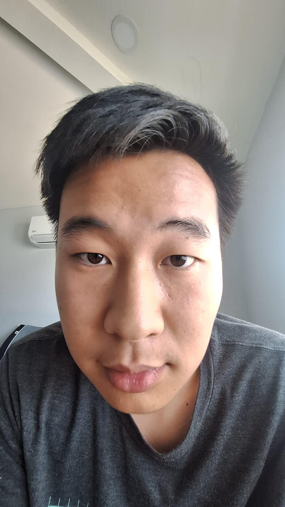
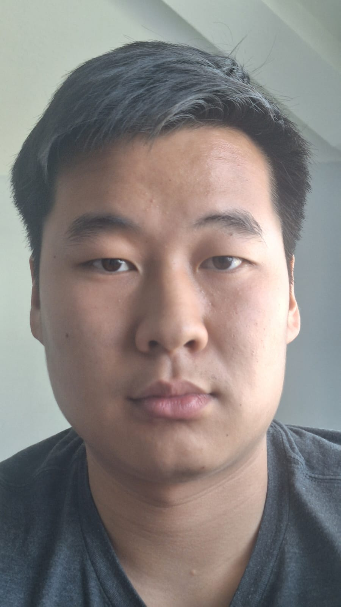
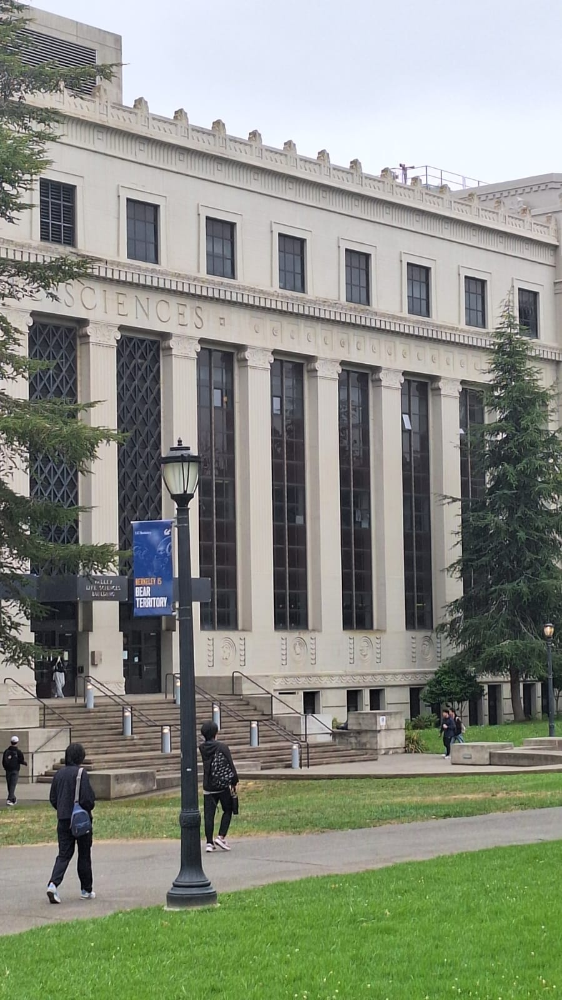
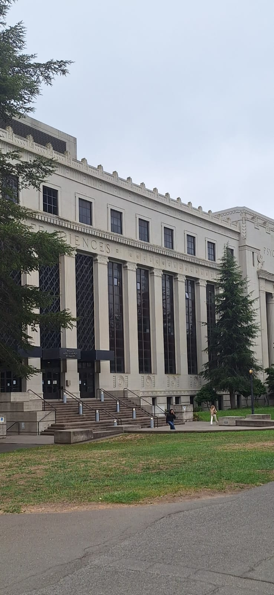
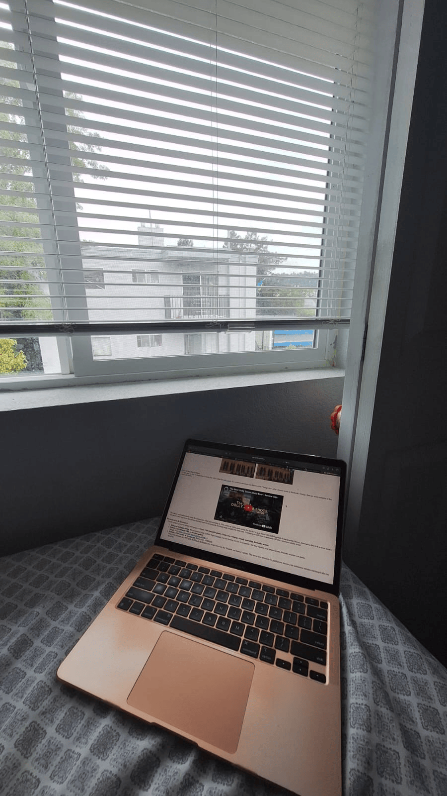

Arthur — CS180, Fall 2026


Left: taken from close up. Right: taken from several feet back, zoomed in.
I took two selfies of myself. For the first, I held the camera up close, which gives the usual distorted selfie. For the second, I extended my arm out and zoomed in until my face filled roughly the same amount of the frame.


Left: from far away, zoomed in. Right: from up close, no zoom.
I first stood far away and zoomed in, then walked toward the building and took a second photo with no zoom, framing it so the building came out about the same size in both.

Here I recreated the dolly zoom (the "Vertigo shot"). I set up my laptop on my bed next to a window, then took a series of photos while walking the camera forwards and zooming out at the same time, keeping the subject about the same size in every frame. Stitching them together gives the effect where the subject holds still while the background appears to rush in or out.